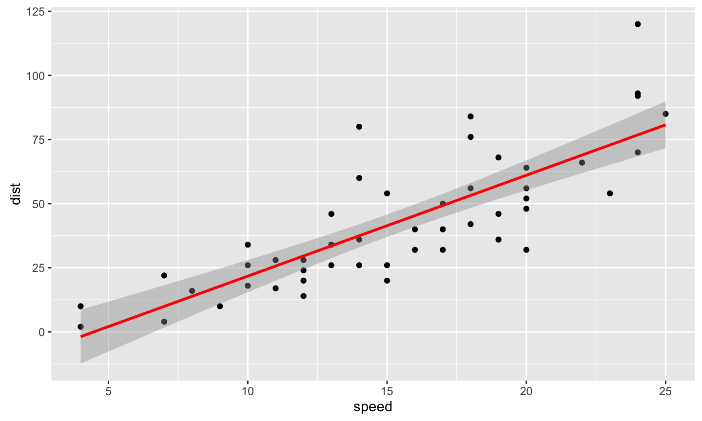
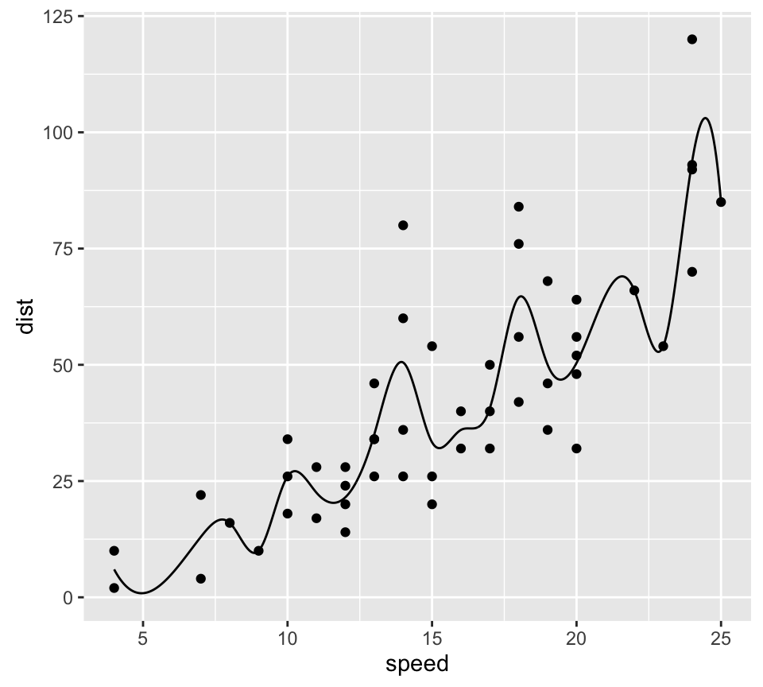
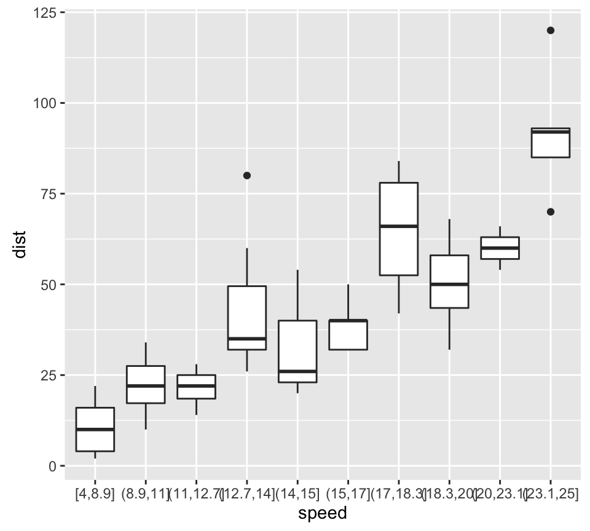
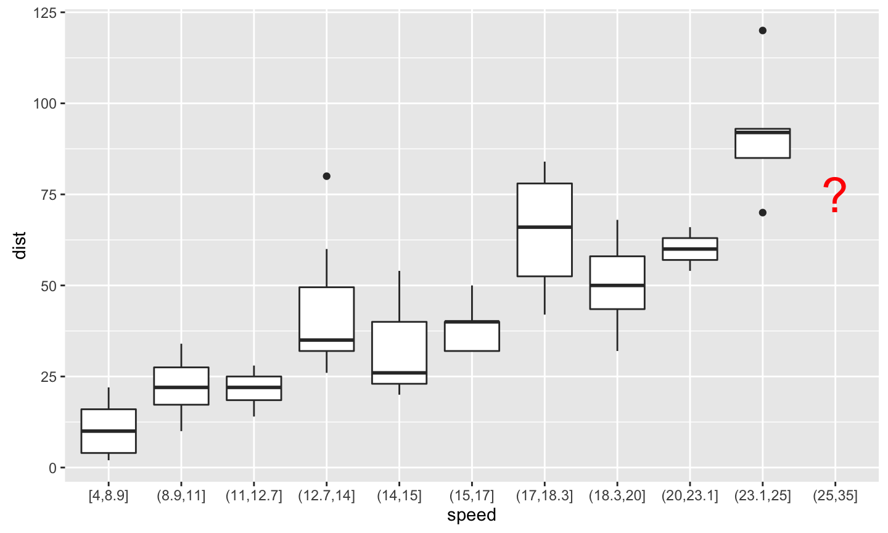

- Volume
- Velocity
- Variety
- (Value)
- (Veracity)
2017-06-12
大數據時代
大數據變革的範例：網路廣告
影音廣告
網站廣告
搜尋廣告

網路廣告應用大數據來對抗傳統媒體
網路廣告應用大數據來對抗傳統媒體
價值：可測量、精準投放

數據的量化

因應數據而產生的商業模式
- Cost-Per-Mille (CPM)
- Cost-Per-Click (CPC)
- Cost-Per-Action (CPA) or Cost-Per-Order (CPO)
因應商業模式而衍生的機器學習需求
- Higher Click-Through Rate(CTR) / Conversion Rate(CVR) ==> Higher Profit
- How to improve CTR/CVR?
- Machine Learning
廣告引擎的四種等級
- Rule Based
- Ad \(\times\) Publisher
- Statistical Modeling
- Deep Learning(?)
引擎升級之路
Volume帶來的挑戰
- 效能問題
效能問題
- 空間、時間
- 記憶體 –> 硬碟
- real time / near real time –> minutes / hours / days
- 細節、細節、細節
- 效能被最差的環節所限制
效能問題 v.s. 資料處理
每個步驟都要優化
- 讀取資料
- 清理資料
- 轉換資料
- 模型建構
- 模型部屬

解決方法
- 更好的程式碼
- 演算法
- 資料結構
- 更多的機器
- 硬體一直在降價
- 容錯
- 協同工作
- 大數據時代的Infrastructure
- 雲端運算
大量數據的機器學習
網路廣告的入門機器學習模型
- Logistic Regression 出自統計學家 David Cox在1958年的文章： Cox (1958)
\[P(y = 1) = \frac{1}{1 + e^{X^T \beta}}\]
- \(y\): 相依變數
- \(X\): 獨立變數
Logistic Regression的範例
Data
| 1 | 2 | 3 | 4 | 5 | 6 | 7 | 8 | 9 | 10 | 11 | 12 | 13 | 14 | 15 | 16 | 17 | 18 | 19 | 20 | |
|---|---|---|---|---|---|---|---|---|---|---|---|---|---|---|---|---|---|---|---|---|
| hour | 0.50 | 0.75 | 1.00 | 1.25 | 1.50 | 1.75 | 1.75 | 2.00 | 2.25 | 2.50 | 2.75 | 3.00 | 3.25 | 3.50 | 4.00 | 4.25 | 4.50 | 4.75 | 5.00 | 5.50 |
| pass | 0.00 | 0.00 | 0.00 | 0.00 | 0.00 | 0.00 | 1.00 | 0.00 | 1.00 | 0.00 | 1.00 | 0.00 | 1.00 | 0.00 | 1.00 | 1.00 | 1.00 | 1.00 | 1.00 | 1.00 |
Model
g <- glm(pass ~ hour, family = "binomial")
| Estimate | Std. Error | z value | Pr(>|z|) | |
|---|---|---|---|---|
| (Intercept) | -4.0777 | 1.7610 | -2.32 | 0.0206 |
| hour | 1.5046 | 0.6287 | 2.39 | 0.0167 |
Logistic Regression的範例

Logistic Regression的範例
統計檢定
| Df | Deviance | Resid. Df | Resid. Dev | Pr(>Chi) | |
|---|---|---|---|---|---|
| NULL | 19 | 27.73 | |||
| hour | 1 | 11.67 | 18 | 16.06 | 0.0006 |
大量數據的挑戰：統計檢定不再有意義
- 大量數據不會影響統計檢定的理論
- 大量數據會放大細節的影響，導致檢定因為「我們不在意的原因」而顯著
大量數據的挑戰：統計檢定不再有意義
set.seed(100); n <- 50; x <- rnorm(n, 0, 10); p <- 1 / (1 + exp(x * 0.01)) y <- runif(n) < p; g <- glm(y ~ x, family = "binomial"); anova(g, test = "Chisq")
## Analysis of Deviance Table ## ## Model: binomial, link: logit ## ## Response: y ## ## Terms added sequentially (first to last) ## ## ## Df Deviance Resid. Df Resid. Dev Pr(>Chi) ## NULL 49 68.994 ## x 1 1.5982 48 67.396 0.2062
大量數據的挑戰：統計檢定不再有意義
set.seed(100); n <- 5000; x <- rnorm(n, 0, 10); p <- 1 / (1 + exp(x * 0.01)) y <- runif(n) < p; g <- glm(y ~ x, family = "binomial"); anova(g, test = "Chisq")
## Analysis of Deviance Table ## ## Model: binomial, link: logit ## ## Response: y ## ## Terms added sequentially (first to last) ## ## ## Df Deviance Resid. Df Resid. Dev Pr(>Chi) ## NULL 4999 6929.1 ## x 1 14.39 4998 6914.7 0.0001486 *** ## --- ## Signif. codes: 0 '***' 0.001 '**' 0.01 '*' 0.05 '.' 0.1 ' ' 1
大量數據的挑戰：統計檢定不再有意義
-
x對y的影響很小 - 小數據量的時候，影響不夠顯著
- 大數據量的時候，檢定很靈敏，所以影響會顯著
數據清理
範例：廣告的原始數據
Impression + Click
Cheap Solution for Small Data

Solution for Large Data
Map Reduce
Feature Extraction
Features of iPinYou Dataset Zhang et al. (2014)

大量的categorical variable
- 在執行機器學習演算法之前，需要把資料轉換為線性代數的矩陣\(X\)
- 由於有大量的categorical variable，所以內建的轉換產生的\(X\)會有大量的欄位
- Ex:
AdvertiserID0001、AdvertiserID0002、AdvertiserID0003…. - Example:
- \(10^9\) instances, \(10^5\) binary features ==> \(10^{14}\) elements
- Requires \(4 \times 10^{14}\) bytes ~ 400 TB
- Ex:
效能問題

… 而且可能還弄不清楚原因
更好的資料結構
- Categorical Variable轉換產生的\(X\)會有大量的0
- Sparse Matrix
- 相同的問題，用Sparse Matrix只需要\(8 \times 10^9\) bytes ~ 8G的空間
心得
- 在大量數據的衝擊之下，我們需要懂更多的計算機概論
- Stistical Modeling \(\times\) Data Structure
大量數據的numerical variable
連續性的假設

- 大量數據會放大細節的影響
克服連續性假設的辦法
splines

binning

Variety 帶來的挑戰
- 大量的Categorical Data，但是他們的出現次數是呈現Exponential Decay
- 增加Machine Learning的難度

Variety 帶來的挑戰
大量的新資料不停的冒出
Numerical Data的新資料

Categorical Data的新資料
## Warning: Removed 1 rows containing non-finite values (stat_boxplot).

新資料帶來的其他問題
Training data的dimension會不一致
Reference
Cox, David R. 1958. “The regression analysis of binary sequences (with discussion).” J Roy Stat Soc B 20: 215–42.
Zhang, Weinan, Shuai Yuan, Jun Wang, and Xuehua Shen. 2014. “Real-Time Bidding Benchmarking with IPinYou Dataset.” ArXiv Preprint ArXiv:1407.7073.